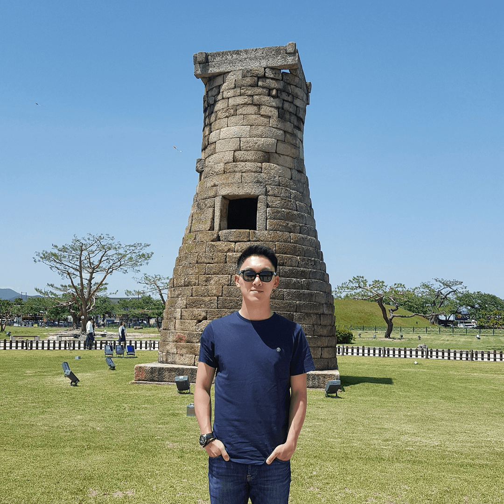

ABOUT ME
Scrupulous cybersecurity professional with a deep understanding of
network and computer systems. Former member of blue and purple teams and
a current member of red team. Good with working in teams, motivating
others, and creating positive team environments. Passionate about
learning new things in the IT world.

Sung Won Caleb Bhyun
Born in South Korea, I moved to Canada with my family in middle
school. Throughout my childhood, I have always been interested in
the world of computers. In my teenage years, even though I knew
nothing about programming, I ran a game server and website getting
spoon-fed by the people on online forums. After graduating high
school, I started university in General Science, not exactly knowing
what to pursue. However, after taking a Computer Science course as
an elective, I instantly knew that this was meant for me. I changed
my degree program to Computer Science. Then, I had to serve in the
military for a couple of years as a citizen of South Korea. I
applied to the Korean Navy and was lucky to be a part of the
Computer Emergency Response Team. That is basically how my career in
cybersecurity started. I am always in search of new things. Not just
in the technology field, I love going through adventures, meeting
new people, experiencing new cultures, and trying out new foods!
EDUCATION
Dalhousie University
Halifax, NS | 2019
Bachelor of Computer Science Degree
WORK EXPERIENCE
Packetlabs
Remote | 2023 - Present
Ethical Hacker
-
Conducted penetration tests on external and internal
networks/infrastructures, wireless networks, PCI network segmentation,
APIs, and web applications, and also carried out phishing campaigns.
-
Wrote and delivered reports that presented technical findings,
executive summaries, and remediation tactics.
-
Consulted with clients to provide in-depth guidance and assistance for
remediating vulnerabilities and misconfigurations.
-
Created and updated operations checklists for penetration tests based
on the methodologies derived from OWASP, NIST, SANS, and MITRE ATT&CK
frameworks.
-
Learned new software, frameworks, and tools to help identify and
exploit vulnerabilities.
GoSecure
Dartmouth, NS | 2021 - 2023
Managed Detection and Response (MDR) Detection Subject Matter Expert
-
Reviewed and updated the client escalation policies based on the
severity of risks identified in the Cyber Kill Chain.
-
Tested the EDR agents from multiple vendors by simulating attacks and
reviewed the EDR rules to ensure faster and more accurate threat
detection for daily operations.
-
Integrated the sandbox system with the SOAR for both automatic and
manual malware analysis.
Managed Detection and Response (MDR) Security Analyst
-
Monitored network activities and endpoint behaviours to take
mitigative actions to contain the activity and minimize damage
utilizing SOAR, SIEM, EDR, NIDS, HIDS, and NGAV.
-
Conducted vulnerability assessment, IOC-based threat hunting, malware
analysis, network traffic analysis, log analysis, and event
correlation.
-
Produced investigation reports that include the collected and analyzed
data from the sensors and Threat Intelligence to support findings in
case of an incident or breach.
- Received Q3 2022 Thank You recognition award.
Modest Tree
Halifax, NS | 2020
VR/AR Software Application Developer
-
Consistently wrote, translated, and coded products according to
specifications and best practices in C# with Unity and CI/CD in an
agile environment.
-
Worked closely with the team to define and create interactive 3D
training software.
-
Identified and resolved bugs efficiently and assisted in quality
assurance activities.
Best Buy
Dartmouth, NS | 2019 - 2021
Geek Squad Counter Intelligence Agent 1 (part-time)
-
Diagnosed and repaired computer hardware and software while protecting
the privacy and confidentiality of personal data.
-
Engaged with clients to provide the best support with Windows and
macOS desktop environments, applications, and more.
Republic of Korea Navy
Second Fleet | 2017 - 2018
Petty Officer Second Class (PO2)
Member of Computer Emergency Response Team (CERT)
-
Monitored, detected, prevented, blocked, and responded to cyber
security risks and incidents utilizing UTM, IPS, NAC, AV, WAF,
firewall, and digital forensics tools.
-
Managed military internet, intranets, monitoring and management
servers, and web servers by troubleshooting, patching, managing
passwords and configurations, and performing log backups.
-
Carried out and supported security awareness training, including
phishing campaigns and presentations on strong passwords and password
reuse.
Manpo Barracks 10th Squad Leader
-
Managed squad members’ military leave, mental health, morale, and team
expenses.
- Carried out roll calls and personnel status reports.
IT Specialist on Patrol Killer Guided Missile Ship (PKG, Hong Si Wook)
-
Managed all networking and computing devices on the ship: satellite
equipment, router, switch, and endpoints including network printers
and VoIP phones.
- Maintained Hong Si Wook’s website on the military network.
Naval Education and Training Command (Information and Communication
Academy)
- Served as a second battalion standard-bearer.
-
Completed Navy Basic Training, Firefighting, CPR, Computer Systems,
Network, and Information Security courses.
VOLUNTEER EXPERIENCE
Saint John Regional Hospital
Saint John, NB | 2011 - 2014
-
Emotionally supported and comforted patients by offering refreshments,
books, and magazines.
-
Assisted the volunteer coordinators in organizing administrative
documents.
Saint John Free Public Library
Saint John, NB | 2011
-
Assisted in organizing books and provided feedback on teen services
and programs.
Romero House Soup Kitchen
Saint John, NB | 2011
-
Served food to patrons, providing them with both an efficient service
as well as an open environment.
- Maintained a clean space to ensure a safe working environment.
AWARDS AND CREDENTIALS
OffSec Certified Expert 3 (OSCE3) Certification
2024
OffSec Exploit Developer (OSED) Certification
2024
OffSec Experienced Penetration Tester (OSEP) Certification
2024
OffSec Web Expert (OSWE) Certification
2023
CREST Registered Penetration Tester (CRT) Certificate
2023
CREST Practitioner Security Analyst (CPSA) Certificate
2023
OffSec Wireless Professional (OSWP) Certification
2023
Burp Suite Certified Practitioner (BSCP) Certification
2023
OffSec Certified Professional (OSCP) Certification
2022
eLearnSecurity Certified Penetration Tester eXtreme (eCPTXv2)
Certification
2022
eLearnSecurity Certified Professional Penetration Tester (eCPPTv2)
Certification
2022
eLearnSecurity Certified Malware Analysis Professional (eCMAP)
Certification
2022
eLearnSecurity Certified Reverse Engineer (eCRE) Certification
2022
eLearnSecurity Certified Threat Hunting Professional (eCTHPv2)
Certification
2022
eLearnSecurity Certified Incident Responder (eCIR) Certification
2021
eLearnSecurity Certified Digital Forensics Professional (eCDFP)
Certification
2021
eLearnSecurity Junior Penetration Tester (eJPT) Certification
2021
ISC2 Systems Security Certified Practitioner (SSCP) Certification
2021
Linux Professional Institute LPIC-1 Certification
2021
Amazon Web Services Certified SysOps Administrator Associate
Certification
2020 | expired
Cisco Certified Network Associate (CCNA) Certification
2020 | expired
ShiftKey Labs Discover Program Certificate
from Grant Wells, Manager | 2019
Certificate for successfully completing the program that allows people
to bring an innovative mindset to everything from academic group
projects, workplaces, or potential startups.
Republic of Korea Navy, Second Fleet Command and Communication Battalion
Commander Award
from Kyung Soo Moon, Commander | 2018
Award for contributing to the improvement of cyber defense and in
recognition of having a strong sense of responsibility for completing
given tasks with a thorough military mindset.
Health and Inclusive Communities Youth Volunteer Award
from K. Dorothy Shephard, Minister | 2013
In recognition of volunteer service in the area of public service.
Johns Hopkins University Center for Talented Youth (CTY) Certificates
from Susan Collins, Senior Program Manager | 2008 - 2009, 2009 - 2010
Certificates for successfully completing Honors math programs.